I have a lot of memorable experiences in my life. However, I will tell my recent memorable experience which is I've got a chance to handle the big event with my classmates and the other classes. This event called "Information Festival" and it was fully handled by students under Faculty of Information Management. These pictures below will tell the story behind each of it.
This is the day my class held a meeting to discussed about the event for the first time. Frankly, it is the first time we sit at the same table. Throughout this meeting, we shared a lot of opinion. Not only that, we also become more close and know each other deeper.
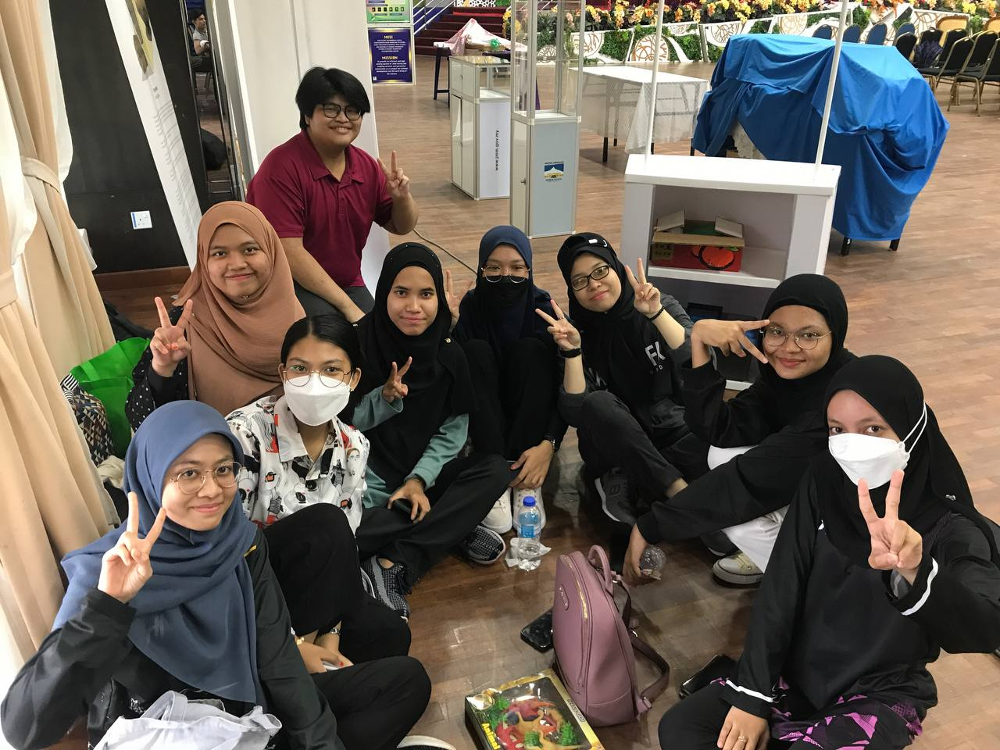 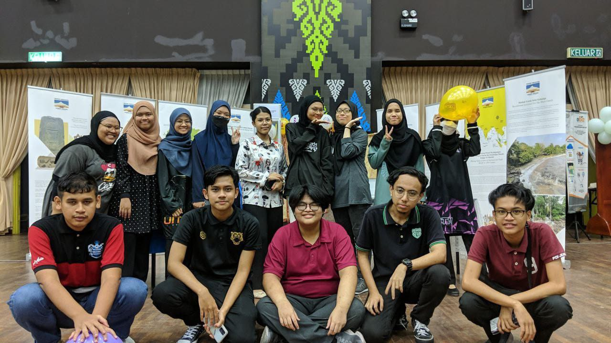Left picture is the day my classmates and I arrived at Dewan Perdana to make a preparation for the tomorrow’s event. We divided the task, decorated our booth and many more together. Meanwhile, the right picture is taken before we disperse after all the preparation is done.
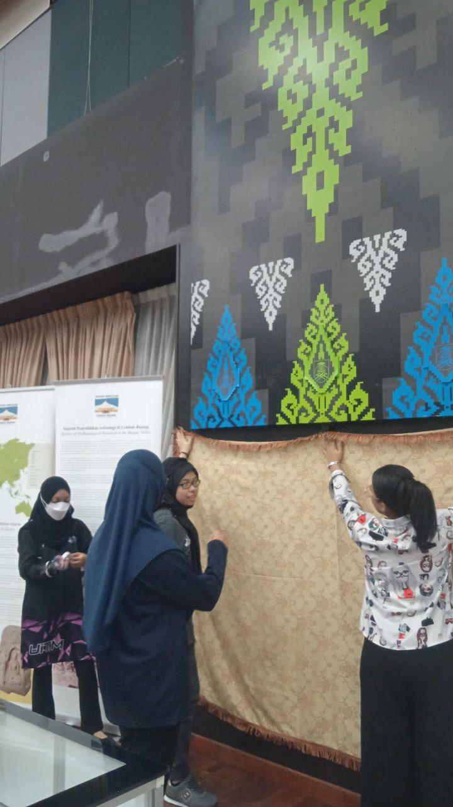 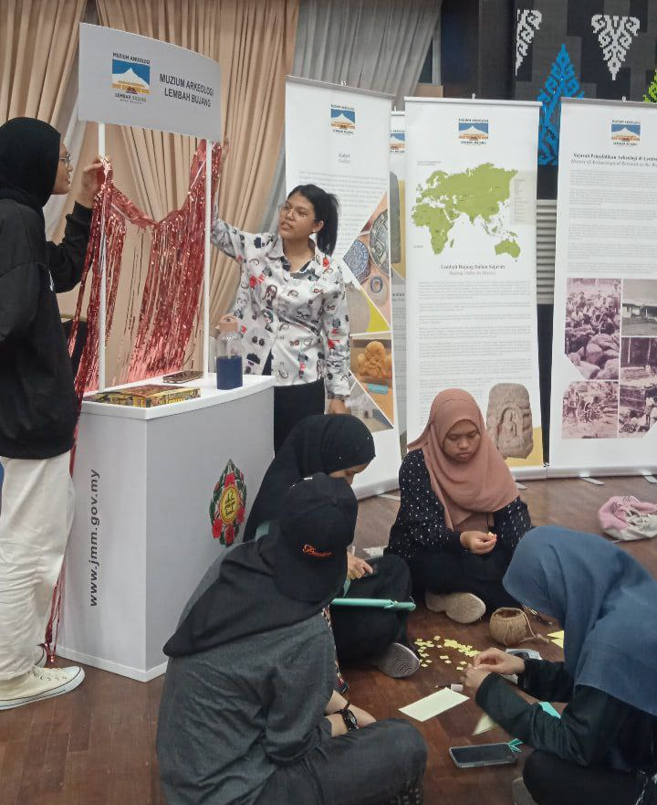 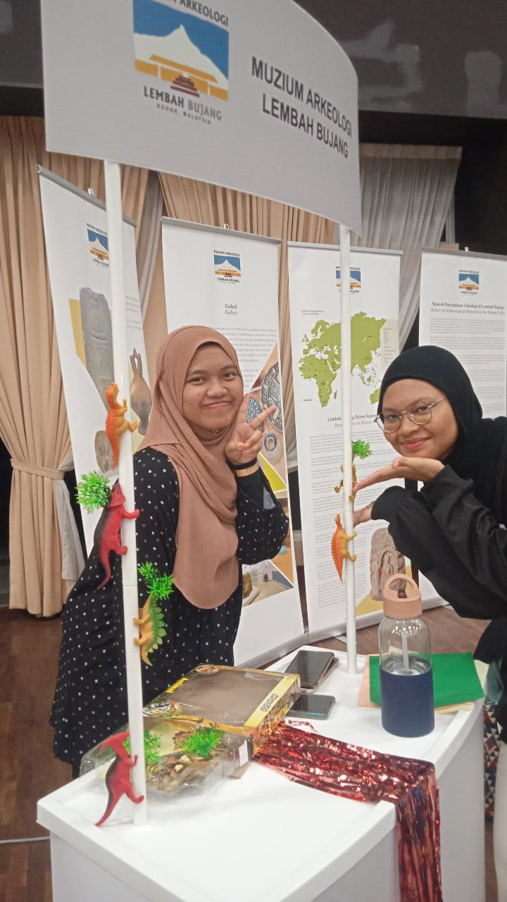 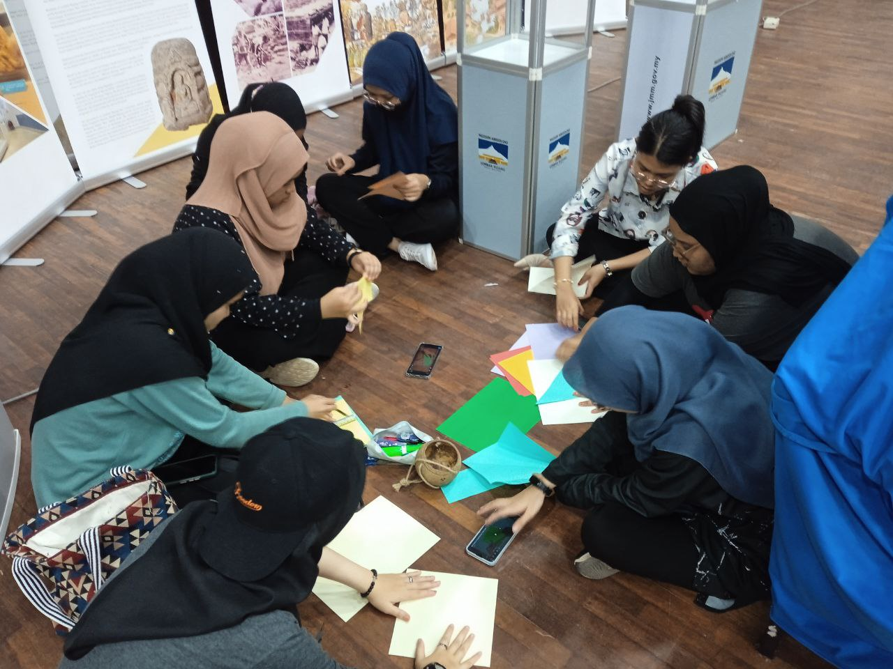All these pictures above is the preparation process for our program. We started during the evening around 2PM and ended around 10PM.
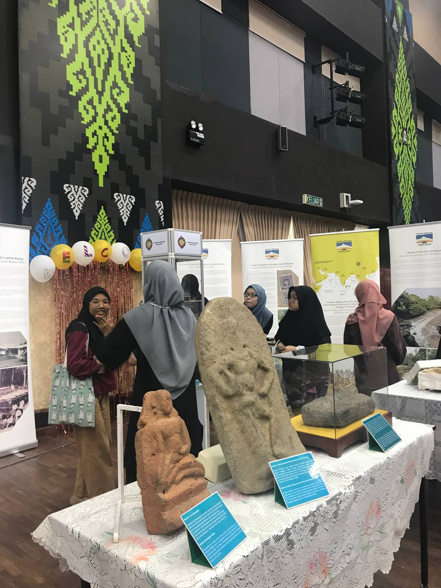 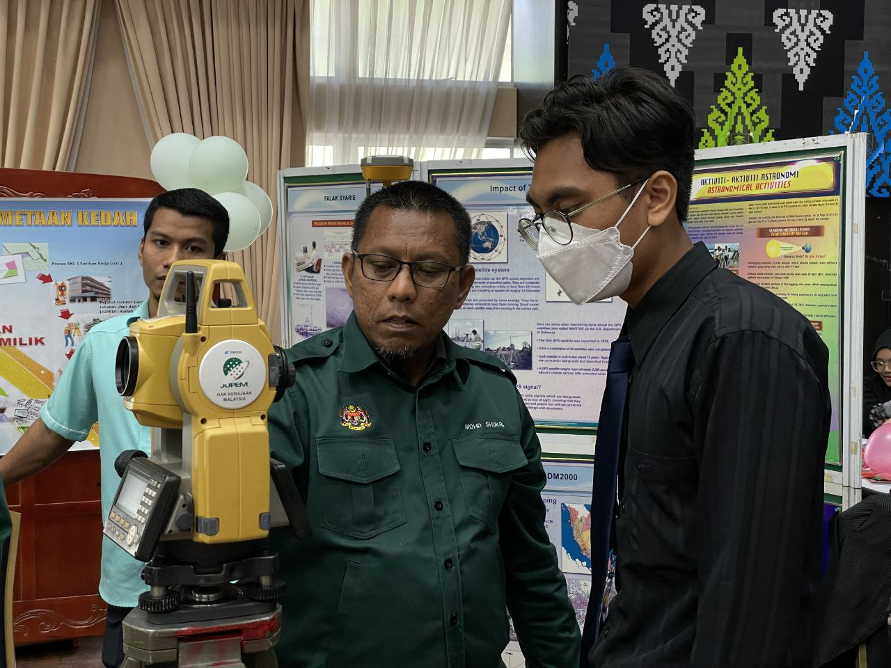 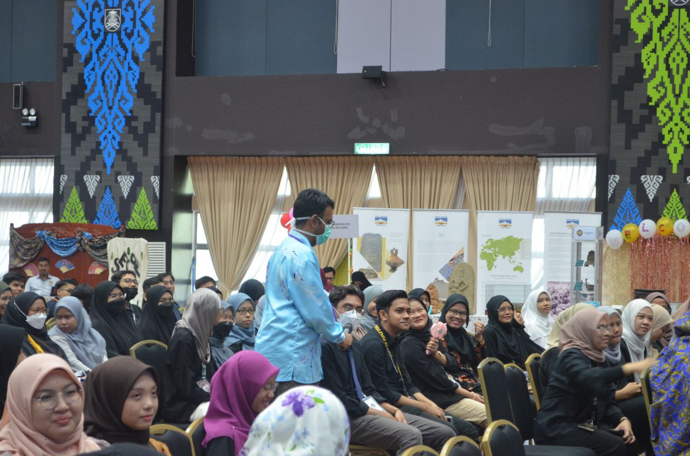 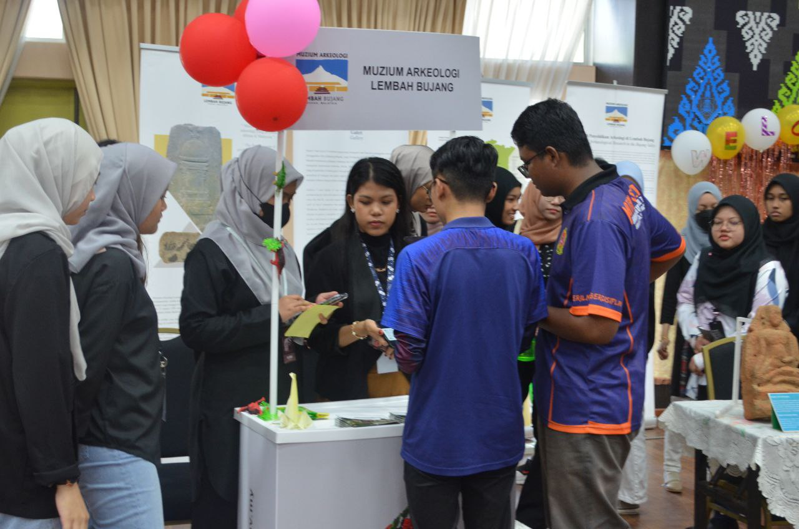These pictures above is the photos taken during the event. All the booths in this event has received a lot of visitors including our booth. We didn't expected it but we were happy to see them came to our booth. A lot of activities were held during this event, for example exhibition from archeology museum, traditional clothes exhibition, mental health talk and so on and it was all joyous.
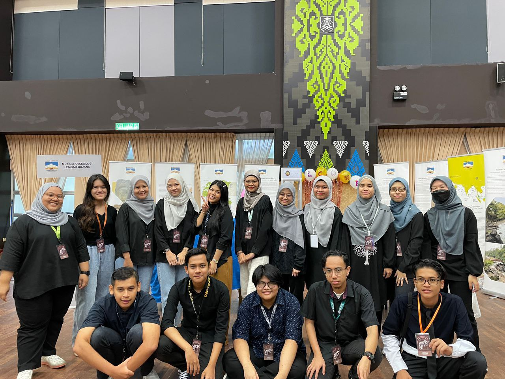 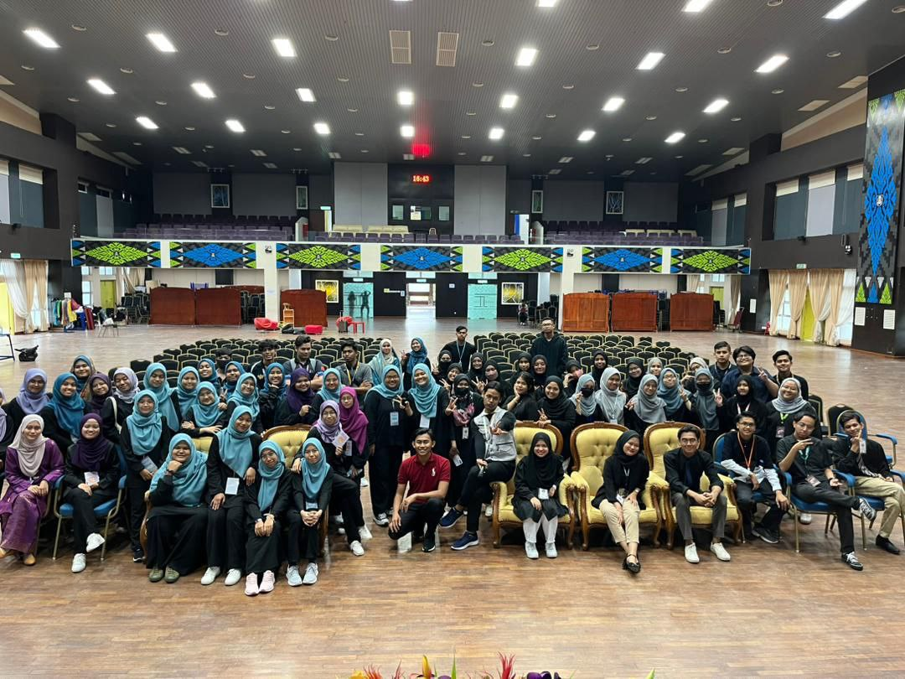These pictures above is the photos that was taken after the event ended. Although this event brings me tiredness and I couldn’t have a short rest for a while because we unexpectedly received a ton of visitors to our booth, but it was worth it, and I have a really great time with my classmates. We become closer and shared a lot of things together. Besides, I also got a chance to know the people from the other classes and from the other courses. Moreover, this event also taught me a lot of things such as it is important to have a tolerance with each other and to respect other people opinions. What’s more important is, throughout this event, I can overcome my shyness and gain a confident because this event required me to talked to a lot of people. I didn’t expected that I can do it very well, and I am so proud with myself.